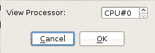
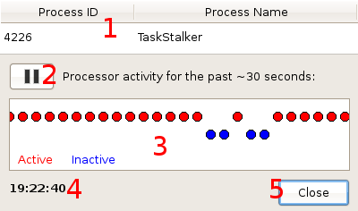

Opened from the "View" menu (hotkey Ctrl+P), this module displays a process execution time-line for the selected CPU. Before this can be displayed, however, the user must select a processor core from the menu illustrated below.
Once a CPU is selected and the "OK" button is pressed, the dialog can be shown. All execution information is read from the scheduler's debug file, /proc/sched_debug. Data is updated every second by default, but this can be modified through the settings menu.
This table displays the process ID and name of the task currently executing on the CPU, or "None" if there is no currently executing task.
Pauses or resumes updating of the processor's activity.
This area displays a graphical representation of the processor's activity over a period of time (roughly 30 times the update interval, so 30 seconds by default). Red ellipses represent points where a task was executing, whereas blue ellipses represent points where the processor was idle. The ellipses first appear at the right side of this area, and with each update, move towards the left; the right-most ellipse is the latest, and the left-most ellipse is the oldest. The user can also click upon an ellipse to display its time-stamp and task execution information.
The current time, as set on the system. This display is also frozen if the pause button is pressed.
Closes this dialog, returning the user to the main window.